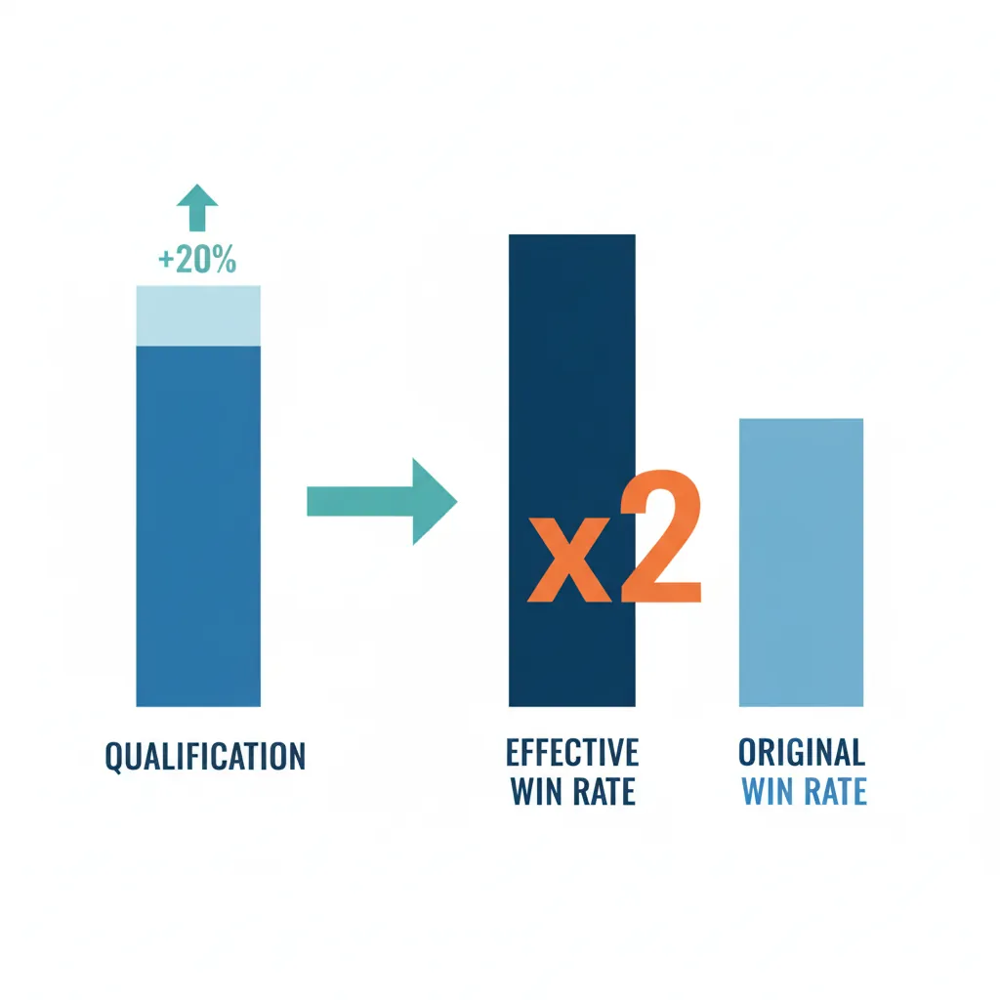
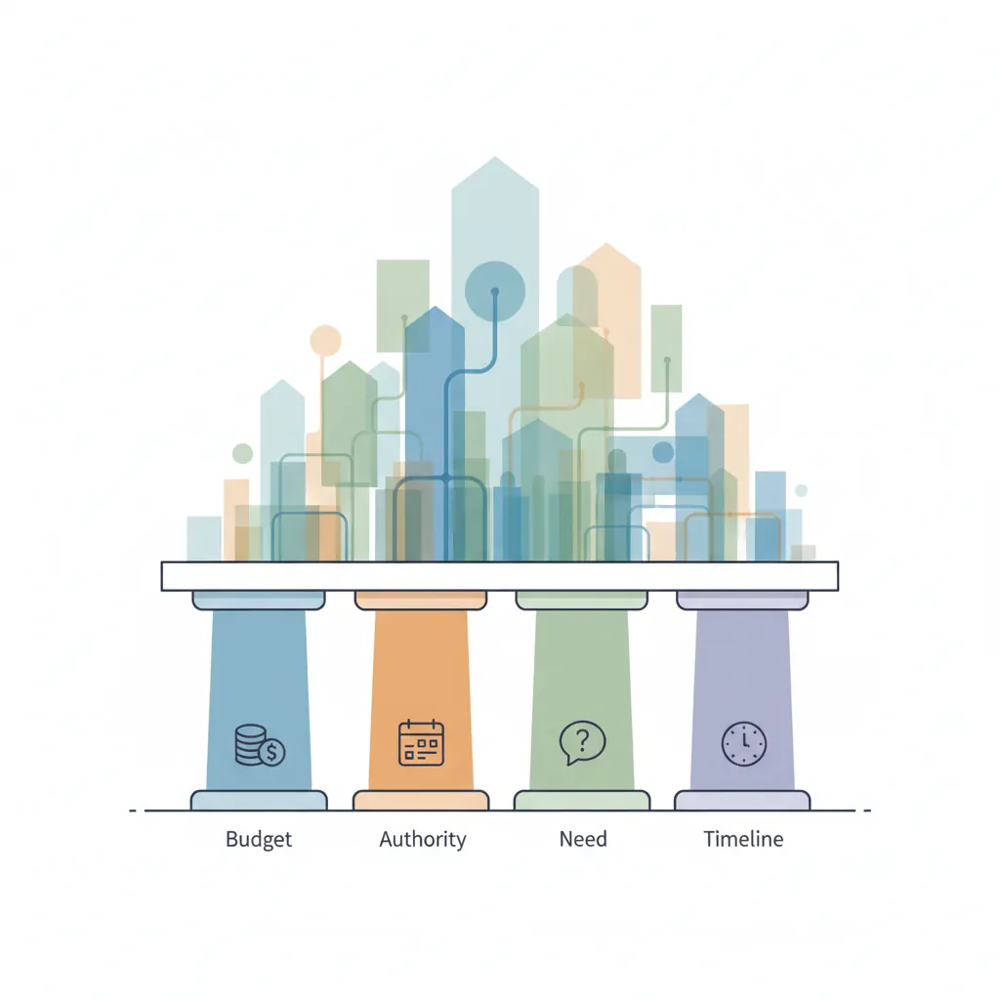
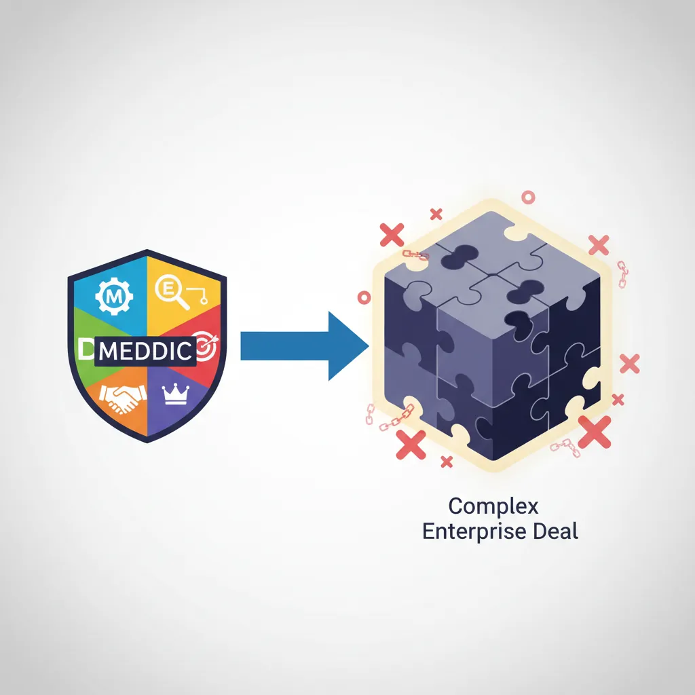
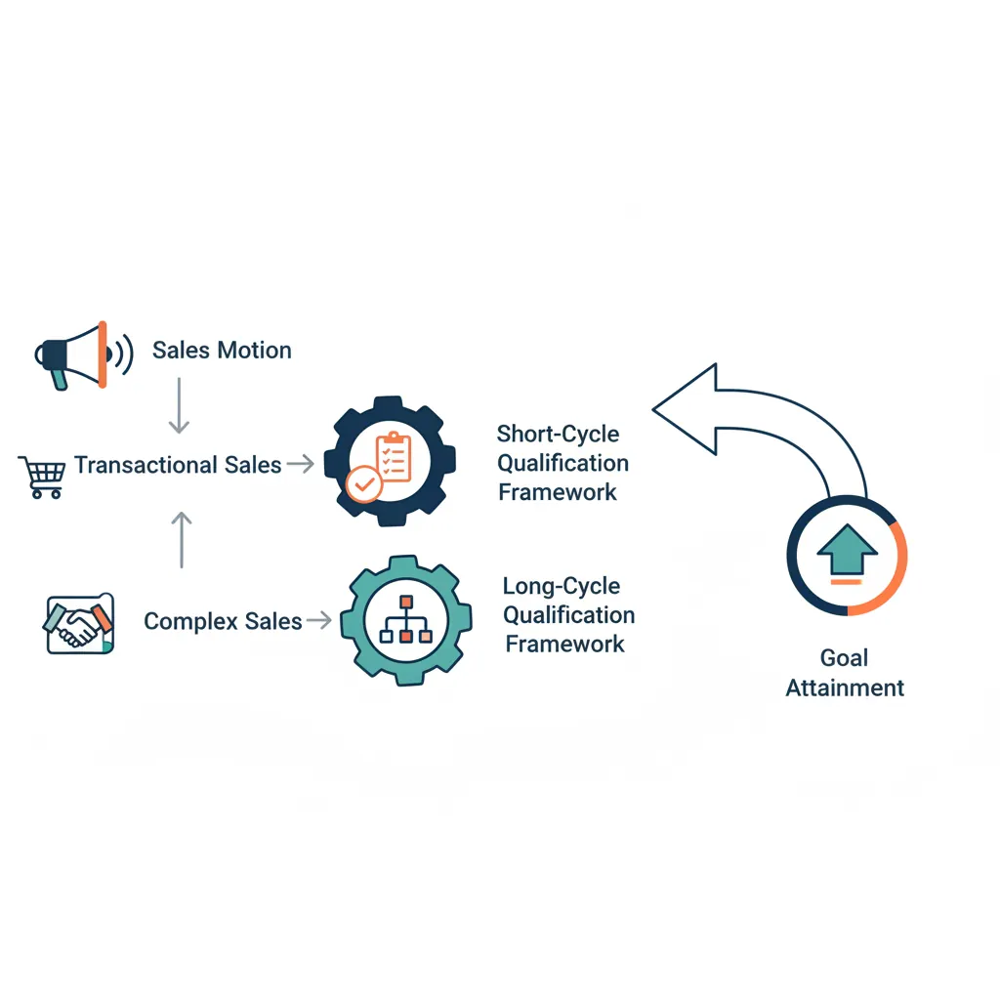
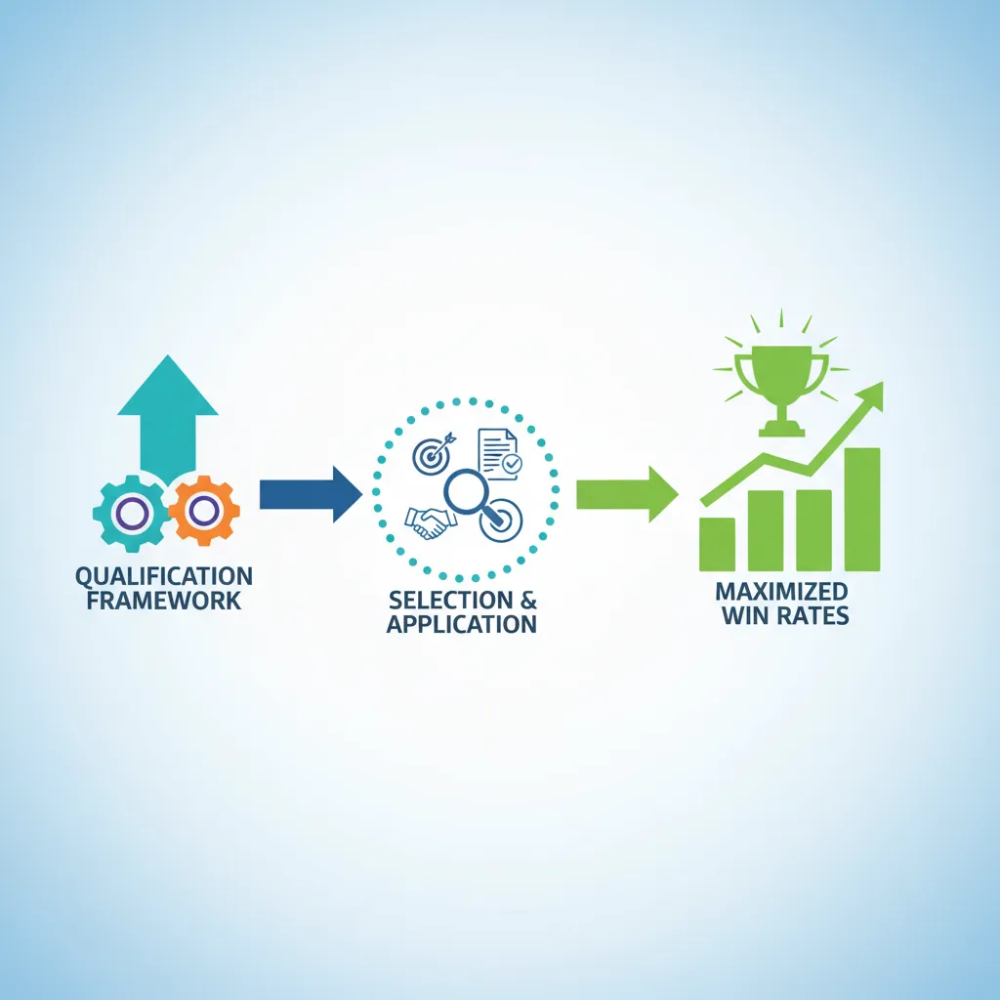

We use cookies to enhance your browsing experience, serve personalized content, and analyze our traffic.
By clicking "Accept All", you consent to our use of cookies. See our
Privacy Policy
for more information.
Part 3 of 18: After prospecting (Part 2), this guide teaches you how to prioritize deals that are truly worth your time—the foundation of sales productivity.
Qualification is the discipline of determining whether a prospect is worth pursuing. It sounds brutal—and it is. But without it, you'll spend months chasing deals that were never going to close, while your competitors close the deals you should have prioritized.
Here's the uncomfortable math: the average enterprise sales rep works on 15-25 active opportunities at any time. If only 20% of those are actually winnable (industry average), you're spending 80% of your selling time on deals you can't win. Qualification flips this ratio.

Improving qualification by 20% can double your effective win rate
The Qualification Equation: Win Rate × Average Deal Size × Number of Qualified Deals = Revenue. Improving qualification by just 20% can double your effective win rate without working harder.
Why Salespeople Resist Qualifying
Qualification requires you to say "no" to potential revenue—a psychologically difficult act. The common traps:
Hope bias: "Maybe this one will work out" even when signals say otherwise
Sunk cost fallacy: "I've already invested 3 hours, might as well keep going"
Activity metrics pressure: Managers reward pipeline size, not pipeline quality
Fear of scarcity: "What if I disqualify too many and miss my number?"
The best salespeople are disqualifying machines. They kill bad deals early so they have time to dominate good ones.
The Disqualification Mindset
Mental Model
Think of qualification like being a bouncer at an exclusive club:
Gate 1 (Basic Fit): Do they meet minimum criteria? Industry, size, geography.
Gate 2 (Problem Fit): Do they have a problem we can solve?
Gate 3 (Priority Fit): Is solving this problem a priority right now?
Gate 4 (Access Fit): Can we reach the people who can say yes?
Gate 5 (Economic Fit): Can they afford us and justify the investment?
Every gate is an opportunity to politely escort someone out—before you waste your time.
Lead Scoring Mechanics
Lead scoring assigns numerical values to prospects based on how likely they are to buy. It transforms gut feelings into repeatable systems.
The Three Pillars of Lead Scoring
Pillar
What It Measures
Example Criteria
Typical Weight
Demographic
Who is the person?
Title, seniority, department
20-30%
Firmographic
What is the company?
Industry, revenue, employees, location
30-40%
Behavioral
What have they done?
Website visits, content downloads, demo requests
30-50%
Building a Lead Scoring Model
Step 1: Analyze Your Closed-Won Deals
Pull your last 50-100 won deals. Look for patterns:
What titles were involved in 80%+ of wins?
What company size closes fastest?
Which industries have highest win rates?
What behaviors preceded a purchase decision?
Step 2: Analyze Your Closed-Lost Deals
This is equally important. What patterns predict failure?
Deals lost to "no decision"—what did they have in common?
Which industries have lowest win rates?
At what stage do most deals die?
Step 3: Assign Point Values
Example Scoring Model:
VP or C-level title: +20 points
Director title: +15 points
Manager title: +10 points
Company revenue $10M-100M: +25 points
Target industry: +20 points
Requested demo: +30 points
Downloaded pricing page: +15 points
Competitor customer (expansion): +25 points
Negative: No budget authority: -50 points
Step 4: Define Score Thresholds
Hot (80+ points): Immediate sales follow-up, priority 1
Warm (50-79 points): Standard qualification call within 24-48 hours
Cool (25-49 points): Marketing nurture, not sales-ready
Cold (<25 points): Long-term nurture or disqualify
Deal Prioritization
Once you've scored leads, you need to prioritize which qualified deals get your time. Not all qualified deals are equal.
The Prioritization Matrix
Plot your deals on two axes:
High Deal Value
Low Deal Value
High Win Probability
Priority 1: All Hands Maximum effort, executive involvement
Priority 2: Efficient Close Standard process, don't overcomplicate
Low Win Probability
Priority 3: Strategic Bet Invest selectively, manage risk
Priority 4: Minimum Viable Automate or deprioritize
The ICE Prioritization Method
For more nuanced prioritization, use ICE scoring on your qualified deals:
Impact (1-10): How big is the revenue potential?
Confidence (1-10): How sure are you this will close?
Ease (1-10): How much effort to close it?
ICE Score = (Impact + Confidence + Ease) / 3
Stack-rank your pipeline by ICE score weekly. Work from the top down.
Time Allocation by Deal Priority
Resource Management
If you have 40 hours of selling time per week:
Priority 1 (High Value + High Probability): 50% of time (20 hours)
Priority 2 (Lower Value + High Probability): 25% of time (10 hours)
Priority 3 (High Value + Lower Probability): 20% of time (8 hours)
Priority 4 (Low Value + Low Probability): 5% of time (2 hours max—automate)
Most reps spend time inversely—more on low-probability deals hoping they'll convert. Flip the script.
BANT Framework
BANT is the grandfather of qualification frameworks, developed by IBM in the 1960s. It stands for Budget, Authority, Need, Timeline. While some argue it's outdated, understanding BANT is foundational because every modern framework builds on these four pillars.

BANT provides the foundational pillars for all modern qualification frameworks
BANT's Origin: IBM created BANT when enterprise sales cycles were simpler—fewer stakeholders, clearer budgets, linear buying processes. The framework remains useful as a starting point, but modern complex sales require more nuanced approaches like MEDDIC.
Budget Qualification
"Do they have money?" is the most direct question in qualification—and the hardest to ask well. Most salespeople either avoid it (losing time on unfunded deals) or ask too bluntly (alienating prospects).
The Budget Reality
In modern B2B sales, "budget" is rarely straightforward:
Pre-allocated budget: Rare luxury—company already set aside money for this type of solution
Flexible budget: Money exists but isn't earmarked; can be redirected if value is compelling
Created budget: No current budget; must build business case to get funds approved
No budget: Company cannot or will not fund this, regardless of value
Your job is to determine which scenario you're in without asking "What's your budget?" (which rarely gets honest answers).
Budget Discovery Techniques
Approach
Question Examples
What You Learn
Investment Context
"What have you invested in similar solutions before?"
Historical spending patterns
Cost of Inaction
"What is this problem costing you today?"
Establishes ROI baseline for budget justification
Range Validation
"Solutions like ours typically range from $X to $Y. Does that align with what you've planned?"
Whether you're in their ballpark
Funding Source
"Would this come from ops budget, IT, or would it require a capital request?"
Approval complexity
Priority Check
"Where does solving this rank against other initiatives competing for investment?"
Whether budget will actually be allocated
Budget Red Flag: "We don't have budget right now" is often code for "This isn't a priority." Dig deeper: "If we could demonstrate $X in savings within 6 months, is there a process to get this funded outside the normal budget cycle?"
Authority Mapping
"Can this person say yes?" The biggest mistake reps make is selling to people who can't buy. By the time you realize your contact can't sign, you've wasted months.
The Authority Spectrum
In most deals, there's no single decision-maker. You need to map the entire buying committee:
Role
Definition
Your Approach
Economic Buyer
Signs the check; can approve budget unilaterally
Executive-level messaging; focus on business outcomes
Technical Buyer
Evaluates fit, requirements, integration
Deep-dive demos; technical specs; proof of concept
User Buyer
Will actually use the solution day-to-day
Ease of use; training; workflow improvement
Champion
Internal advocate who sells for you when you're not there
Equip with ammunition; align incentives
Coach
Provides intel on the org, process, competitors
Build trust; protect the relationship
Blocker
Has veto power and opposes your solution
Understand objections; neutralize or convert
Authority Discovery Questions
"Walk me through how your organization typically makes decisions of this size."
"Besides yourself, who else would need to weigh in on this decision?"
"Who would need to sign off on the contract?"
"Is there anyone who might push back on bringing in a new vendor?"
"Who was involved in the last purchase like this?"
The Org Chart Test
Authority Validation
When your contact says they can make the decision:
Ask: "What's your approval limit for purchases like this?"
Ask: "Who's your manager and what's their view on this type of investment?"
Google them—check LinkedIn for reporting structure
Use tools like LinkedIn Sales Navigator or ZoomInfo to map the org
Reality check: If your contact reports to a VP, and the deal is $100K+, they probably need VP approval. Plan accordingly.
Need & Timeline Discovery
Need answers "Do they have a problem we can solve?" Timeline answers "When do they need to solve it?"
Levels of Need
Level
Indicator
Your Action
Latent Need
They have the problem but don't recognize or prioritize it
Educate; create urgency; may be long sales cycle
Active Need
They know the problem and are exploring solutions
Good timing—qualify further and compete
Urgent Need
Pain is acute; they need to solve this immediately
Accelerate—remove friction, prioritize this deal
Compelling Event
External deadline forcing action (new regulation, contract expiry, etc.)
Best scenario—align your process to their deadline
Discovering Timeline
Timelines without compelling events are just wishes. Your job is to find—or create—the external force that makes inaction painful.
Direct: "When do you need this implemented by?"
Event-based: "Is there a deadline, contract renewal, or fiscal year end driving this?"
Consequence-based: "What happens if this doesn't get solved by [date]?"
Priority-based: "Where does this rank against other initiatives this quarter?"
The 30-Day Test: If a prospect can't articulate any compelling reason to decide within 30-90 days, the deal is probably not real. Either create urgency (limited-time offer, implementation timeline) or deprioritize.
BANT in Practice: Qualification Call Template
BANT Qualification Call (15-20 minutes)
OPENING (2 min)
"Thanks for your time. My goal today is to understand if there's a fit between
what you're trying to accomplish and how we might help. Mind if I ask a few
questions to make sure I don't waste your time?"
NEED DISCOVERY (5 min)
- "What prompted you to take this call today?"
- "Tell me about the problem you're trying to solve."
- "How long has this been an issue?"
- "What have you tried so far?"
AUTHORITY MAPPING (3 min)
- "Walk me through how decisions like this get made in your org."
- "Besides yourself, who else would be involved?"
- "Who signs off on the final contract?"
TIMELINE (3 min)
- "When do you need this solved by?"
- "Is there an event driving this timeline?"
- "What happens if this doesn't happen by then?"
BUDGET (3 min)
- "Have you invested in solutions like this before? What was the range?"
- "Would this come from an existing budget or need special approval?"
- "At a high level, does $X-Y feel realistic for solving this?"
CLOSE (2 min)
Based on what you've shared, here's what I recommend as next steps...
MEDDIC & MEDDPICC
MEDDIC is the gold standard for enterprise sales qualification. Developed at PTC (a software company) in the 1990s, it's more rigorous than BANT and designed for complex, high-stakes deals with multiple stakeholders and long sales cycles.

MEDDIC provides rigorous qualification for complex enterprise deals
MEDDPICC Qualification Framework
graph TD
MD["MEDDPICC Enterprise Deal Qualification"]
M["M — Metrics Quantified business impact"]
E["E — Economic Buyer Person with budget authority"]
DC["D — Decision Criteria How they evaluate solutions"]
DP["D — Decision Process Steps and timeline to close"]
IP["I — Identify Pain Critical business problem"]
CH["C — Champion Internal advocate with power"]
CO["C — Competition Alternative options considered"]
PP["P — Paper Process Legal, procurement, security"]
MD --> M
MD --> E
MD --> DC
MD --> DP
MD --> IP
MD --> CH
MD --> CO
MD --> PP
style MD fill:#132440,stroke:#132440,color:#fff
style CH fill:#e8f4f4,stroke:#3B9797
style E fill:#BF092F,stroke:#132440,color:#fff
Why MEDDIC Wins: MEDDIC forces you to understand the customer's internal decision process, not just surface-level fit. It's predictive—if you can fill in every MEDDIC element, you have a high-probability deal.
Complete MEDDIC Breakdown
MEDDIC is an acronym: Metrics, Economic Buyer, Decision Criteria, Decision Process, Identify Pain, Champion.
M = Metrics
What it means: Quantifiable measures of success that the customer will use to evaluate your solution.
Question
What You're Looking For
"How will you measure success for this initiative?"
Their KPIs and success criteria
"What's the dollar impact of solving this problem?"
ROI potential; basis for business case
"What metrics are you tracking today?"
Baseline for before/after comparison
"What would success look like in 6 months? 12 months?"
Their expected outcomes
Metrics Example: "Our customer support team handles 10,000 tickets/month. We want to reduce handle time from 8 minutes to 5 minutes, which would save 500 hours/month—roughly $15,000 in labor costs monthly."
E = Economic Buyer
What it means: The person who can unilaterally approve the purchase without escalation.
The Economic Buyer is different from your main contact. They control the budget and can decide "yes" or "no" regardless of what others recommend.
Key question: "Who can approve this purchase without needing anyone else's sign-off?"
Validation: "Have you worked with [Economic Buyer name] on similar purchases before?"
Access test: "Would it make sense to include [Economic Buyer] in our next conversation to ensure alignment?"
Economic Buyer Red Flags
Warning Signs
"I'll present it to leadership" — Your contact isn't the EB
"Let me run it by my manager" — They're a champion, not a buyer
Can't get a meeting with the EB — You're being blocked or deal isn't real
EB changes mid-deal — Reorg; restart your qualification
Rule: If you can't engage the Economic Buyer by mid-cycle, your win probability drops by 50%+.
D = Decision Criteria
What it means: The formal and informal factors the customer will use to compare vendors.
Business criteria: ROI, TCO, vendor stability, support quality
Personal criteria: Ease of use, career impact, risk to champion
Questions to uncover Decision Criteria:
"What are the must-have requirements vs. nice-to-haves?"
"How will you compare the options you're evaluating?"
"Is there a formal scoring matrix or RFP you're using?"
"What would make you choose one vendor over another?"
Pro Tip: If you can influence the Decision Criteria before they're finalized, you can shape them around your strengths. Early engagement is critical.
D = Decision Process
What it means: The steps and stakeholders involved from evaluation to signed contract.
Map the entire buying journey:
Evaluation: Who reviews demos? How many vendors make the shortlist?
Recommendation: Who presents to leadership?
Approval: What are the sign-off gates? Legal? Procurement? IT Security?
Contracting: Who negotiates terms? What's the typical legal review time?
Implementation: What happens after signature?
Questions:
"Walk me through what happens from here to a signed contract."
"What's the typical timeline for a decision like this?"
"Are there any internal reviews or approvals that could slow things down?"
"Have you bought something similar before? How did that process go?"
I = Identify Pain
What it means: The specific, concrete pain points driving the purchase.
Pain is the engine of every deal. No pain = no urgency = no deal. You need to identify pain at three levels:
Pain Level
Description
Example
Technical Pain
Day-to-day operational problems
"Our system crashes twice a week"
Business Pain
Impact on revenue, cost, or strategic goals
"We're losing 3% of revenue to downtime"
Personal Pain
Impact on the individual's career or reputation
"I'm getting blamed for system failures"
Pain implication questions:
"What's the consequence of not solving this?"
"How does this affect your team's ability to hit their goals?"
"What happens to you personally if this doesn't get fixed?"
C = Champion
What it means: An internal advocate who has power, influence, and something to gain from your solution winning.
Champions sell for you when you're not in the room. They're the difference between deals that close and deals that stall.
The Champion Test: Ask yourself three questions:
Power: Can they influence the Economic Buyer?
Access: Do they share internal information with you?
Vested Interest: Do they personally benefit if you win?
If you can't answer "yes" to all three, you don't have a champion—you have a contact.
Paper Process (MEDDPICC)
MEDDPICC adds two elements to MEDDIC: Paper Process and Competition. The "Paper Process" refers to everything that happens between verbal agreement and signed contract.
Paper Process Elements
Legal Review: Who reviews contracts? How long does it take? What are typical redlines?
Procurement: Is there a formal procurement team? Do they negotiate discounts?
MSA vs. Order Form: Do they have an existing master agreement or need a new one?
Payment Terms: Net 30? Net 60? Annual pre-pay? Monthly?
Key questions:
"Once we agree this is the right solution, what's the process to get the contract signed?"
"How long does legal review typically take for your team?"
"Are there any security or compliance requirements we should anticipate?"
"Does procurement get involved in vendor negotiations?"
Paper Process Pitfalls
Common Deal Killers
Surprise legal review: Deal agreed in principle, then sits in legal for 8 weeks
Security requirements: InfoSec demands certifications you don't have
Procurement ambush: After negotiating price, procurement demands 30% more discount
Budget freeze: Year-end freeze locks up all new purchases
Indemnification: Legal won't sign your standard terms; negotiation extends months
Prevention: Map the paper process early. Start security questionnaires in parallel with evaluation.
Competition (The Second C)
Know who you're competing against—including "do nothing."
Direct competitors: Other vendors in your category
Indirect competitors: Alternative approaches (build vs. buy, different category)
Status quo: The biggest competitor—doing nothing
Questions:
"What other solutions are you evaluating?"
"Have you looked at building this in-house?"
"What would have to be true for you to decide to stick with what you have today?"
Champion Building
Champions don't fall from the sky—you build them. Here's how:
The Champion Development Process
Identify potential champions: Look for people with pain, ambition, and influence
Provide value first: Give them insights, data, or frameworks before asking for anything
Align incentives: Show them how your solution helps them personally (promotion, recognition, make their job easier)
Equip them: Give them the slides, ROI data, and talking points to sell internally
Test the relationship: Ask them for something—intel, an intro, advice. Real champions say yes.
Champion Equipping Kit:
2-page executive summary customized for their org
ROI calculator with their numbers
Competitive differentiation one-pager
Success stories from similar companies
"Why now" talking points to create urgency
The MEDDIC Scorecard
For every deal, score each MEDDIC element 1-5. Total score predicts deal health:
Element
1 (Unknown)
3 (Partial)
5 (Complete)
Metrics
No defined success metrics
General goals identified
Specific KPIs quantified
Economic Buyer
Don't know who it is
Identified but no access
Met and aligned
Decision Criteria
Unknown
General idea
Written criteria; shaped to our strengths
Decision Process
Unknown
Know stages but not timeline
Full process mapped with dates
Identify Pain
No pain discovered
Technical pain only
Business + personal pain quantified
Champion
No internal advocate
Friendly contact but no power
Champion with access to EB
Score 25-30: High probability—accelerate
Score 18-24: Good but gaps—address gaps
Score 12-17: Risk—serious qualification work needed
Score <12: Unqualified—consider disqualifying
MEDDIC Deal Scorecard Tool
Use this tool to score your active deals against the MEDDIC framework. A complete scorecard helps you identify deal gaps and prioritize your pipeline.
MEDDIC Deal Scorecard
Score each element 1-5 to assess deal health. Download as Word, Excel, or PDF.
Draft auto-saved
All data stays in your browser. Nothing is sent to or stored on any server.
MEDDIC Scoring (1-5 each)
Advanced Qualification Frameworks
Beyond BANT and MEDDIC, several modern frameworks have emerged—each optimized for different sales motions. Understanding when to use which framework is itself a qualification skill.

Choosing the right qualification framework depends on your sales motion
GPCTBA/C&I (HubSpot Method)
HubSpot developed GPCTBA/C&I (read as "GPT-C-BA / C&I") for inbound-focused sales. It's designed for leads who come to you—already interested but need qualification.
Breakdown:
Element
What It Means
Key Questions
G - Goals
What are they trying to achieve?
"What are your top priorities this quarter?"
P - Plans
How do they plan to achieve those goals?
"What's your strategy to get there?"
C - Challenges
What's getting in the way?
"What's preventing you from hitting those goals today?"
T - Timeline
When do they need results?
"When do you need to see progress?"
B - Budget
Is there money allocated?
"Have you set aside funds for this initiative?"
A - Authority
Who makes the decision?
"Who else needs to be involved in this decision?"
C&I - Consequences & Implications
What happens if they don't solve this?
"What's the cost of not fixing this? What becomes possible if you do?"
When to Use GPCTBA/C&I: Inbound leads, marketing-qualified leads (MQLs), content-driven sales where the prospect initiated contact. It starts with their goals (positive framing) rather than their pain (negative framing).
C&I: The Power Lever
The "Consequences & Implications" element is what makes GPCTBA unique. It forces you to uncover both:
Negative consequences: "If you don't solve this, what happens?" (pain, loss, risk)
Positive implications: "If you do solve this, what becomes possible?" (opportunity, gain, upside)
People are motivated by avoiding pain and achieving gain. C&I captures both.
ANUM Framework
ANUM stands for Authority, Need, Urgency, Money. It's a reordering of BANT that puts Authority first.
Why Authority First?
The logic: Don't waste time understanding need, urgency, and budget if you're talking to someone who can't make a decision. Establish authority before investing in deep discovery.
ANUM Flow
Authority-First Framework
Authority: "Are you the person who would sign off on a solution like this?" If no → Ask for intro to the right person
Need: "What problem are you trying to solve?" If no real need → Disqualify early
Urgency: "What's driving the timeline?" If no urgency → Nurture or deprioritize
Money: "Is there budget for this?" If no budget → Build business case or wait
Best for: High-volume outbound where you need fast qualification; transactional sales.
CHAMP Framework
CHAMP stands for CHallenges, Authority, Money, Prioritization. Developed as a modern alternative to BANT, CHAMP flips the conversation order: instead of asking about budget first (which can feel interrogative), you start with the prospect's challenges—the problems keeping them up at night.
Why challenges first? When you open with "What's your budget?" prospects get defensive. When you open with "What challenges are you facing?" they lean in. CHAMP assumes that if the challenge is painful enough, budget and authority will follow.
Element
What It Means
Key Questions
CH - Challenges
What specific problems does the prospect face? How severe is the impact on their business?
"What's your biggest operational challenge right now?" / "How is this problem affecting your team's output?"
A - Authority
Who owns the decision? What does the approval chain look like?
"Who else is involved in evaluating solutions like ours?" / "Walk me through how your team typically approves a new vendor."
M - Money
Is budget available—or can it be created if the pain is severe enough?
"Have you invested in solving this before?" / "If we could show a 3× return, could your team secure funding?"
P - Prioritization
Where does solving this rank among all their current initiatives?
"Where does this sit on your priority list compared to other projects?" / "What would cause this to move up?"
CHAMP in Action: SaaS Sales Example
ScenarioMid-Market
Prospect: VP of Operations at a 200-person logistics company
Challenges: "Our dispatch scheduling is manual—dispatchers spend 4 hours per day on spreadsheets, and we're missing 12% of delivery windows."
Authority: "I own the evaluation. Final sign-off is the COO, but she trusts my recommendation on operational tools."
Money: "We spent $80K on a failed custom tool last year. We'd need to show a clear ROI to justify new spend—but the board has earmarked a modernization budget."
Prioritization: "This is our #2 priority after warehouse expansion. If we could start a pilot in Q2, it would align with our fiscal planning cycle."
Verdict: Strong CHAMP qualification—clear pain, known authority chain, budget precedent, and a timeline driver. Progress to demo.
CHAMP vs BANT: BANT asks "Do you have budget?" (binary). CHAMP asks "How severe is the challenge?" (spectrum). In modern sales where budgets are often created after a compelling business case is built, CHAMP's challenge-first approach uncovers opportunities that BANT would prematurely disqualify.
PACTT Framework
PACTT stands for Pain, Authority, Consequence, Target Profile, Timeline. It extends the classic qualification approach by adding two powerful dimensions: the consequences of inaction and an explicit check on whether the prospect fits your ideal customer profile.
Element
What It Means
Key Questions
P - Pain
What specific, measurable pain does the prospect have? Is it acknowledged by leadership?
"What's the single biggest frustration your team deals with daily?" / "Can you quantify the cost of this problem?"
A - Authority
Who has the power and budget authority to say yes?
"Who would need to approve this purchase?" / "Is there a procurement process we should be aware of?"
C - Consequence
What happens if the prospect does nothing? What's the cost of inaction over 6–12 months?
"If you don't address this in the next quarter, what's the impact?" / "What's at risk if things stay the same?"
T - Target Profile
Does this prospect match your ideal customer profile (industry, size, tech stack, use case)?
Internal check: Do they match our ICP? Have we succeeded with similar companies? Is this a segment we want to grow?
T - Timeline
When do they need a solution? Is there a compelling event driving urgency?
"Is there a deadline or event driving this?" / "What's your ideal go-live date?"
The Consequence Multiplier
What makes PACTT distinctive is the Consequence element. Many frameworks ask about pain, but few force you to quantify what happens if the pain persists. This creates urgency:
Financial consequence: "If churn continues at 8% monthly, you'll lose $960K in ARR over the next year."
Competitive consequence: "Your two biggest competitors adopted this technology last quarter. Each month of delay widens the gap."
Operational consequence: "Your team is spending 30 hours per week on manual reporting. That's $75K in salary cost doing non-strategic work annually."
Career consequence: "If this initiative stalls, how does that reflect on the transformation your leadership team announced?"
Target Profile—the hidden qualifier: Many reps pursue any prospect who shows interest. PACTT's Target Profile element forces an honest internal check: "Is this a customer we can actually serve well?" Selling to poor-fit customers leads to high churn, bad reviews, and wasted CS resources. Sometimes the best qualification decision is to say no.
PACTT Quick-Qualification Checklist
Template5-Minute Check
After each discovery call, score each PACTT element as Green (confirmed), Yellow (partially known), or Red (unknown/missing):
☐ Pain: Can you state the prospect's #1 pain in one sentence with a dollar figure?
☐ Authority: Have you identified the economic buyer by name and title?
☐ Consequence: Can you articulate what happens if they do nothing for 6 months?
☐ Target Profile: Do they match at least 4 of 5 ICP criteria?
☐ Timeline: Is there a specific date or event driving the decision?
Rule of thumb: 4–5 Greens = high priority. 2–3 Greens = nurture with targeted follow-up. 0–1 Greens = deprioritize or disqualify.
Custom Qualification Models
Every company has unique win characteristics. The best sales orgs build custom qualification models based on their own data.
Building Your Custom Model
Step 1: Analyze 100+ Closed Deals
Study your wins and losses. Look for patterns:
What titles are present in winning deals?
What deal size correlates with higher win rates?
What industries close fastest?
What behaviors (demo attendance, pricing page views) precede wins?
Timeline specificity ("Q3" vs. "sometime this year")
Budget confirmation method (verbal vs. written vs. allocated)
Step 3: Weight and Score
# Example Custom Scoring Model
def calculate_deal_score(deal):
score = 0
# Authority factors
if deal.economic_buyer_engaged:
score += 30
elif deal.manager_engaged:
score += 15
else:
score += 5
# Multi-threading bonus
score += min(deal.contacts_engaged * 5, 20) # Cap at 20
# Timeline compression
if deal.compelling_event:
score += 20
if deal.decision_date_committed:
score += 10
# Technical validation
if deal.poc_completed and deal.poc_successful:
score += 25
elif deal.demo_completed:
score += 10
# Champion strength (1-5 scale)
score += deal.champion_score * 4 # Max 20
# Negative indicators
if deal.competitor_incumbent:
score -= 15
if deal.budget_uncertain:
score -= 10
return min(max(score, 0), 100) # Bound to 0-100
Framework Selection Matrix
Choose your framework based on your sales motion:
Sales Motion
Recommended Framework
Rationale
High-volume transactional
ANUM or BANT
Fast qualification essential; simple criteria
Mid-market B2B
CHAMP or BANT
Challenge-first works well when budgets are flexible
Enterprise complex sales
MEDDIC or MEDDPICC
Deep qualification critical; multiple stakeholders
Inbound-led sales
GPCTBA/C&I
Starts with goals; aligned with inbound mindset
Outbound with ICP focus
PACTT
Consequence urgency + target profile fit check
Consultative/solution
MEDDIC + Custom
Champion-centric; long relationship-based cycles
Exercises
Exercise 1: BANT Qualification Call
15 minutesRole Play
Objective: Practice BANT discovery in a simulated call
Partner with a colleague—one plays the prospect, one plays the rep
The "prospect" picks a real scenario (buying software for their team)
The "rep" has 10 minutes to uncover BANT—use the questions from this guide
Debrief: What worked? What felt awkward? What did you learn?
Switch roles and repeat
Exercise 2: MEDDIC Pipeline Audit
30 minutesAnalysis
Objective: Score your current pipeline using MEDDIC
Pull your top 5 active deals from your CRM
Use the MEDDIC Scorecard tool above for each deal
Identify: Which element is weakest across all deals?
Create action items: One specific next step per deal to improve the weakest element
Compare total scores—reprioritize your time based on deal health
Exercise 3: Champion Identification
20 minutesStrategic
Objective: Evaluate champion strength in your deals
For each of your top 3 deals, write down your primary contact
Answer the Champion Test questions:
Do they have access to the Economic Buyer?
Have they shared confidential internal information?
What do they personally gain if you win?
Score each champion 1-5 based on Power, Access, and Vested Interest
For any deal where you scored below 3: Who else could be a champion?
Create a plan to develop a stronger champion in each deal
Key Takeaways
Summary:
Qualification is about saying no: Kill bad deals early so you can dominate good ones. Most salespeople waste 80% of time on 20% of winnable deals.
BANT is foundational, not complete: Use it for simple sales. CHAMP modernises it with a challenge-first approach. Upgrade to MEDDIC for complex enterprise deals with multiple stakeholders.
The Economic Buyer is non-negotiable: You need access to the person who can approve budget. No EB access = low win probability.
Champions sell when you're not there: A friendly contact isn't a champion. True champions have Power, Access, and Vested Interest.
Quantify pain: Technical pain matters less than business impact. Personal pain (career risk) drives urgency.
Map the paper process early: Deals die in legal and procurement. Start compliance work in parallel with evaluation.
PACTT adds consequence and fit: Quantifying the cost of inaction creates urgency. Checking target profile fit prevents wasted cycles on poor-fit accounts.
Score and stack-rank: Use MEDDIC scorecards weekly. Prioritize your calendar based on deal health, not activity metrics.

Selecting and applying the right qualification framework maximizes win rates